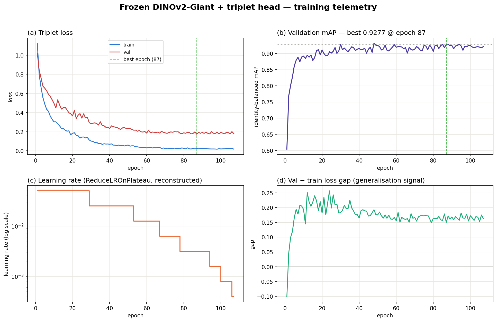

The central finding is counterintuitive but repeatable: on a small, high-variance wildlife dataset, preserving a foundation model’s learned representation produced a stronger and simpler system than fine-tuning it.
01 / OBJECTIVEFrom camera trap to individual identity
Wildlife monitoring relies heavily on camera traps to track endangered animal populations. Historically, researchers have manually inspected thousands of photographs to match individual animals by their unique coat markings. This project establishes an automated deep-learning pipeline for jaguar re-identification, transforming visual pattern matching into a high-dimensional metric-learning task.
Instead of assigning an image to a fixed set of labels, the system converts each camera-trap image into a compact numerical embedding. Images of the same jaguar should occupy nearby positions in the resulting vector space; images of different jaguars should remain far apart.
02 / CHALLENGESmall data, open populations
Standard classification networks are poorly matched to ecological research. The population is dynamic: newly observed animals should be identifiable without changing a classification head and retraining the full model.
Real-world imagery also introduces difficult sources of variation:
- Extremely limited data. The training set contains only 1,895 images across a few dozen individuals; some animals have as few as three photographs.
- Environmental distortion. Night flashes, changing posture, camera angles, motion blur and foliage occlusion all obscure the identifying coat pattern.
- Class imbalance. A naïve aggregate score can overstate performance by allowing frequently observed individuals to dominate the metric.
03 / ARCHITECTUREFreeze the knowledge, train the task
After testing fine-tuned MegaDescriptor-L and end-to-end EVA-02-L approaches, the breakthrough came from using a frozen DINOv2-Giant backbone: 1.1 billion parameters pretrained on approximately 142 million unlabelled images.
A. Frozen foundation features
The backbone is loaded and locked before training. Each image passes through it once to produce a 1,536-dimensional feature vector, which is cached to disk. This single feature-extraction pass is the only large-scale computation required.
With just 1,895 training images, the pretrained representation contains richer and more general visual knowledge than the small dataset can teach a billion-parameter network. Freezing protects that knowledge from memorisation.
B. Lightweight projection head
A small trainable head reshapes the generic 1,536-dimensional features into jaguar-specific 256-dimensional embeddings:
Linear(1536 → 512) → BatchNorm → ReLU → Dropout(0.3)
→ Linear(512 → 256) → BatchNorm → L2 normaliseThe head contains approximately one million parameters—about one-thousandth of the backbone. L2 normalisation places each embedding on a unit sphere, making cosine similarity a natural comparison measure.
C. Triplet loss with batch-hard mining
Training optimises a single objective: triplet loss with hard-negative mining. Structured mini-batches contain eight identities and four images per identity. For each anchor, the loss pulls the most difficult positive match closer and pushes the most deceptively similar negative farther away.
D. Efficient optimisation
Adagrad at a learning rate of 5 × 10−2, a plateau scheduler and early stopping train the small head in minutes. Cached features remove repeat backbone computation, and the workflow can run on a modest GPU or CPU.
04 / RESULTSA decisive change in model strategy
The frozen-backbone system improved private leaderboard performance from 0.817 to 0.950 while removing the need for test-time augmentation, query expansion and reranking.
| Approach | Backbone | Private LB | Decision |
|---|---|---|---|
| Frozen DINOv2-Giant + triplet head | DINOv2-Giant, 1.1B frozen | 0.950 | Champion |
| MegaDescriptor-L, fine-tuned | MegaDescriptor-L, 0.2B | 0.817 | Previous champion |
| EVA-02-L, 40 epochs | EVA-02-L, 0.3B fine-tuned | ≤0.245 CV | Rejected |
| Public reference | DINOv2-Giant, 1.1B frozen | 0.959 | External benchmark |

Three eras of experimentation
- v1 — specialist fine-tuning. MegaDescriptor-L reached 0.817 with extensive post-processing.
- v2 — larger end-to-end model. EVA-02-L overfit severely; cross-validation mAP remained at or below 0.245 after 40 epochs.
- v3 — frozen generalist. DINOv2-Giant plus a one-million-parameter head achieved 0.950 without post-processing.
For roughly 1,000–5,000 images and a backbone above 100 million parameters, start with the backbone frozen. Test whether a small task-specific head can extract the signal before accepting the cost and instability of fine-tuning.
05 / INFERENCEStrength through simplicity
The final inference path needs no post-processing tricks:
- Extract. Pass each image through the frozen backbone once and cache the 1,536-dimensional feature.
- Project. Transform the cached feature into a 256-dimensional L2-normalised embedding.
- Compare. Calculate cosine similarity for query–gallery pairs and clip values to [0, 1].
- Rank. Evaluate with identity-balanced mean Average Precision, giving each jaguar equal weight.
Reaching 0.950 mAP without test-time augmentation, query expansion or k-reciprocal reranking indicates that representation strength—not inference machinery—was the primary lever.
06 / TRANSFERBeyond jaguars
The same frozen-backbone paradigm can transfer wherever identity is encoded in texture or spatial pattern.
Ecology and wildlife monitoring
Leopards, zebras, whale sharks, giraffes and individual whales all carry visually distinctive patterns. The backbone already captures texture and structure; only the projection head needs to learn the species-specific task.
Agriculture and livestock
Unique facial markings and coat patterns can provide a camera-based complement to physical tags for cattle or horses, with the task-specific head retrained on farm imagery.
Industrial traceability
Wood grain, metal imperfections and wear patterns can act as natural fingerprints for parts matching, counterfeit detection and asset tracking across a supply chain.
If identity is encoded mainly in texture, the approach transfers directly. If it depends on shape or contour, add lightweight detection or keypoint localisation while keeping the foundation representation stable.